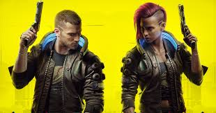
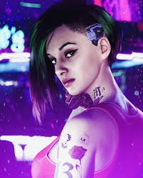
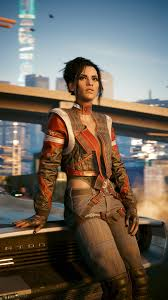

Personagens

V.
Protagonista do jogo, mercenário em Night City, lutanto por uma vida melhor.
Johnny Silverhand
Rockeiro rebelde e egocêntrico, figura central da história.

Judy Alvarez
Especialista em Neurodança e uma haker exepcional, uma grande aliada importante.

Panam Palmer
Uma combatente habilidosa, leal e teimosa, que deixa o clã para trabalhar como mercenária em Night City após conflitos familiares.